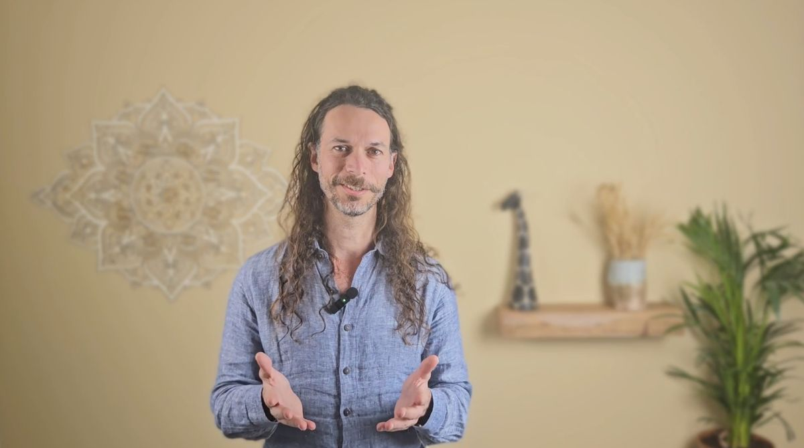
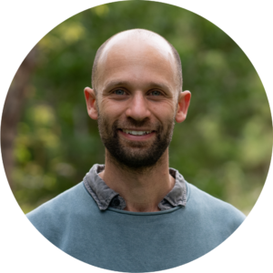
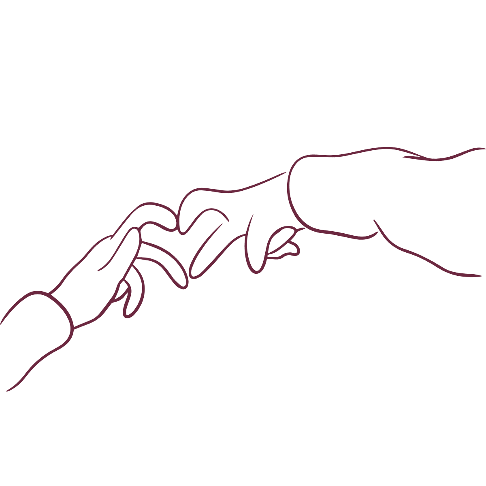
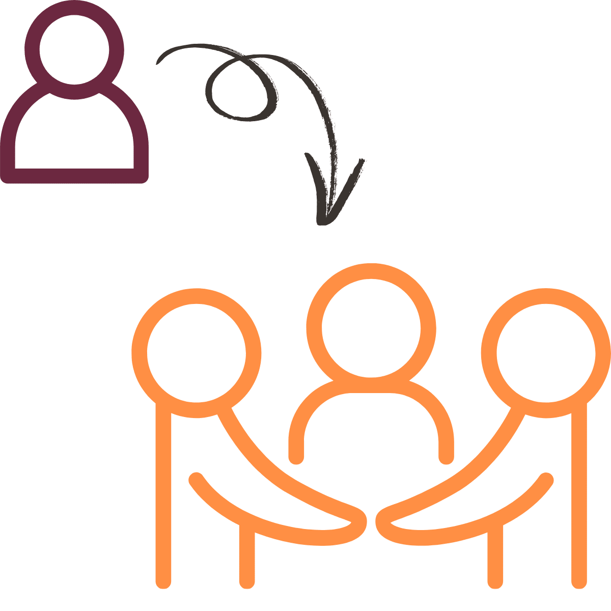

Practice, connect and grow in our online community.
We will be opening the community once we reach critical mass (~16 people). Please register your interest and share with others with a base in NVC.

Do you find it challenging to apply this newfound relational skilfulness in real-world interactions?
Do you long for the community which was so prominent and supportive during your courses? You're not alone.
Many of us NVC practitioners find that without ongoing support and practice, our skills remain like seeds without the requisite conditions needed for them to sprout. Real-world application becomes difficult, and the transformative power of this way of relating remains underdeveloped.
A supportive space to continue your relational journey in community and with our guidance.
Meet your Guides

Danny Cohen
After graduating from the Wharton School in 2010, I set out to explore what my education hadn't yet touched. That journey has taken me deep into wisdom traditions, psychotherapy training, over 15 months in silent retreat, systems thinking, Nonviolent Communication, and countless real-life experiments in growth and connection. Along the way, I've had the privilege of sharing this path with thousands of people worldwide — educators, CEOs, activists, parents — through trainings, retreats, coaching, and heartfelt conversations. What guides me is a passion for demystifying meaningful connection and sharing the principles that reveal the way to more fulfilling, effective, and regenerative ways of being alive together.

Gina Seilern
I first encountered Nonviolent Communication (NVC) in 2012, and it felt like coming home. Since then, it's become a central thread in my life and work. NVC offered a living, embodied response to the big questions that philosophy couldn't answer — rooted not in ideals, but in presence and relationship. I spent 8 years in international development, but longed for deeper impact and integrity. NVC awakened a passion for collaborative, human-centered change. Since 2018, I've shared this work through workshops, coaching, and trainings — grounded in presence, trust, and shared humanity. I'm also a mother of three.

Mike Korman
NVC and I first crossed paths in 2017 and it's been a love affair since then. What I fell and still am in love with is the sense of "home" I feel in my body when I connect with others, and myself, via its principles. It's like a sweet remembering of "oh, this is how we can be together! Yes! This feels so right!" I'm a father of two young kids so I have a ready supply of endless opportunities to put my learning into practice. I'm particularly drawn to how we can integrate NVC into our everyday lives — embodying its essence while holding to our authentic personalities and nature. I work with couples and run NVC-based workshops and trainings and am really proud to be a part of this offering with Danny and the team.
Jorinde Rapsey
Born in the Netherlands, I discovered Nonviolent Communication in 2015 during my journey into parenthood, finding it transformed both my family life and professional path. As co-founder of Peace Talks NZ, I specialize in supporting parents through compassionate communication practices. "My biggest study ground is living daily life with my family. NVC has shown me how to seek support from the outer world to nurture my inner world — a paradigm shift I believe is essential for living life more fully." I create spaces where members feel safe to explore deeper connections with themselves and others, bringing my background in education and philosophy to every practice session.

The community experience
Your Monthly Membership Includes


Reflections from Past Participants
"I can't say enough how great both this course and Danny are and how essential this is for any relationship. Danny is a true master at making this material accessible, digestible and practical. I was able to create an open heart relationship with a complete stranger in a few simple sentence exchanges."
"This course gave us powerful practices that helped us navigate some of our most difficult conversations. Danny creates a container that invites both deep vulnerability and playfulness, a magical combination for learning. Working with Danny was truly transformational."
"(From the spouse of a participant) Let me be a witness that she is really integrating it in a helpful way. I feel more ease and comfort in bringing up something difficult because she's responding in a way that's working much better for me. It's really a pretty big deal..."
Join Our Community for $36/month
That's less than two coffees per week and you receive:
- 2 sessions every month
- Unlimited community support
- Expert guidance available on the forums
- A resonant and attuned community of practice partners

Support yourself in developing the relationality you wish for
Often we hear of how ongoing growth, meaningful connection, and practical support in embedding these principles would make such a difference. So here it is. We truly believe that this platform can be a great support in helping you refine your skillset and be buoyed by communal growth, which leads to further manifestation of the quality of connection that you long for.